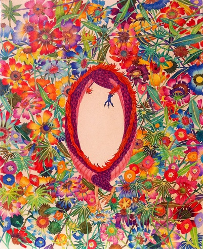
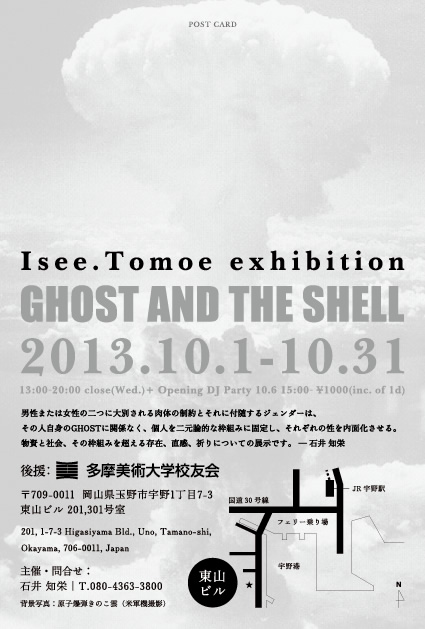

Isee.Tomoe exhibition
GHOST AND THE SHELL
2013.10.1～10.31 13:00～20:00（水曜日休み）

GHOSTは「精霊、精神、直感、人格」
THE SHELLは「肉体」
を意味します。
そのふたつは密接に絡み合い、同一であることを認められているからこそ、人は社会において権利を得て生活したり人と関わったりできるわけですが、自分のSHELLとGORSTの間に齟齬が生じている感覚を持ちながら社会の中で生きている人もいます。
GHOSTの訳である精霊の意味ですが、キリスト教の三位一体説の「父、子、精霊」の精霊だと理解してくださると一番近いと思っています。
天の主である父なる神がこの世のすべてを創造したとするキリスト教の思想においては、子なるキリストはそれに対応して「神の愛」が地上における人間の肉体を得たものと考えられています。
そして精霊は天からイエスの母マリアに「神の意志」として降り、人間としての肉体を得させる作用、つまり天と地を結ぶ役割をしています。
これをひとつの象徴として考え、人の持つ理性を父、肉体を子、理性と肉体を結ぶ直感や反射に近い（無）意識の総体を精霊（GHOST）と呼んでみたいと思っています。
社会における権利とは、その人に肉体があるからこそ保証されるのでしょうか。
またその肉体は今のところ、男性または女性の二つに大別される現実があり、それに付随するジェンダーはその人自身のGHOSTに関係なく、個人を男性または女性という二元論的な枠組みに固定し、それぞれの性を内面化させようとします。
それは正しいことでしょうか。
そんな問いをめぐる展示です。
THE SHELLは「肉体」
を意味します。
そのふたつは密接に絡み合い、同一であることを認められているからこそ、人は社会において権利を得て生活したり人と関わったりできるわけですが、自分のSHELLとGORSTの間に齟齬が生じている感覚を持ちながら社会の中で生きている人もいます。
GHOSTの訳である精霊の意味ですが、キリスト教の三位一体説の「父、子、精霊」の精霊だと理解してくださると一番近いと思っています。
天の主である父なる神がこの世のすべてを創造したとするキリスト教の思想においては、子なるキリストはそれに対応して「神の愛」が地上における人間の肉体を得たものと考えられています。
そして精霊は天からイエスの母マリアに「神の意志」として降り、人間としての肉体を得させる作用、つまり天と地を結ぶ役割をしています。
これをひとつの象徴として考え、人の持つ理性を父、肉体を子、理性と肉体を結ぶ直感や反射に近い（無）意識の総体を精霊（GHOST）と呼んでみたいと思っています。
社会における権利とは、その人に肉体があるからこそ保証されるのでしょうか。
またその肉体は今のところ、男性または女性の二つに大別される現実があり、それに付随するジェンダーはその人自身のGHOSTに関係なく、個人を男性または女性という二元論的な枠組みに固定し、それぞれの性を内面化させようとします。
それは正しいことでしょうか。
そんな問いをめぐる展示です。

展示期間
2013.10.1～10.31
13:00～20:00（水曜日休み）
13:00～20:00（水曜日休み）
住所
岡山県玉野市宇野1丁目7－3東山ビル201,301
同時開催
オープニングラウンジDJパーティ「サン瀬ッ戸」
10.6 15:00～21:00＠201
１D込み\1000
東山リミックスマーケット
10.4,5,6 10:00～20:00@401
10.6 15:00～21:00＠201
１D込み\1000
東山リミックスマーケット
10.4,5,6 10:00～20:00@401
主催・問い合わせ
石井知栄 | T.080-4363-3800